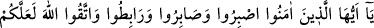

olmadığına şehâdet etmeyi hazırladım.” dedi. Hanımı defnedildikten sonra Ferazdak
hanımının kabri yanında ayakta şu beyti inşâd etti:
Bana âfiyet vermez ise Allah, korkarım ki kabir ötesi
Sıcaklık ve darlık açısından kabirden daha şiddetlidir.
Kıyâmet günü galiz bir komutanla sürücüler
Gelip de sürünce, ben Ferazdak’ı.
Tasmalanmış ve mosmor bir şekilde cehenneme
Sürüklenerek giden insanoğlu, kaybetmiş demektir.
Enes b. Mâlik’ten Hz. Peygamber (s.a.)’in şöyle buyurduğu nakledilmektedir: “Kim,
Allah’dan üç kere cenneti isterse cennet: “Allah’ım, bu kişiyi cennete koy” der. Kim
de Allah’dan üç kere kendisini cehennemden korumasını isterse cehennem:
“Allah’ım, bunu cehennemden koru” diye duâ eder.[187]
Biz de Allah Teâlâ Hazretleri’nden bizi cehennemden korumasını, iyilerle beraber
cennete koymasını, azaptan kurtarıcı sâlih ameller işlemeye muvaffak kılmasını dileriz.
Bütün maksat ve hedef menzillerine ulaşanların; doğuda ve batıda Allah’a vâsıl
olanların, kendisi sâyesinde Allah’a ve bu makamlara ulaştığı Peygamber (s.a.)’in yüzü
suyu hürmetine bizleri fırka-i nâciyeden kılmasını niyaz ederiz.
200. Ey îman edenler! Sabredin; (düşman karşısında) sebât gösterin; (cihad için)
hazırlıklı ve uyanık bulunun ve Allah’dan korkun ki başarıya erişebilesiniz.
“Ey inananlar” tâat meşakkatlerine ve başınıza gelen hastalık, fakirlik, yokluk, korku
vb.
meşakkatlere
“sabredin.”
Savaşın
sıkıntılarına
sabretme
husûsunda
“düşmanlarınızdan daha sabırlı olun.” Arzularınıza sabırla karşı koyma husûsunda da
en büyük düşmanınız olan nefse galip gelin. Âyetin bu bölümünde söz konusu edilen
“musâbere” sabrın husûsî bir türü olup, sabırdan daha şiddetli; daha zor, daha kâmil ve
diğerlerine sabretmekten daha üstün olduğu için, sabır gereken konulara sabır etme
emrinden sonra özellikle zikredilmiştir. “Sabr” Allah’ın râzı olmayacağı şeyler
konusunda kendini dizginlemektir.
Sabrın ilk aşaması “tasabbur”dur, ki kendini sabretmeye zorlamaktır. İkinci aşama
“musâbere” olup bu da, kişiyi sabretmekten alıkoyan şeylere karşı çıkmaktır. Sonraki
aşamalar ise, “istibâr”, “itibâr” ve “iltizâm”dır. Sonra “sabır” gelir ki sabr, artık bu
işin en son ve hiç zorlanmadan elde edilen noktasıdır.
“Savaş için hazırlıklı, bulunun” Düşmana yakın yerlerde düşmanınızı gözetleyerek